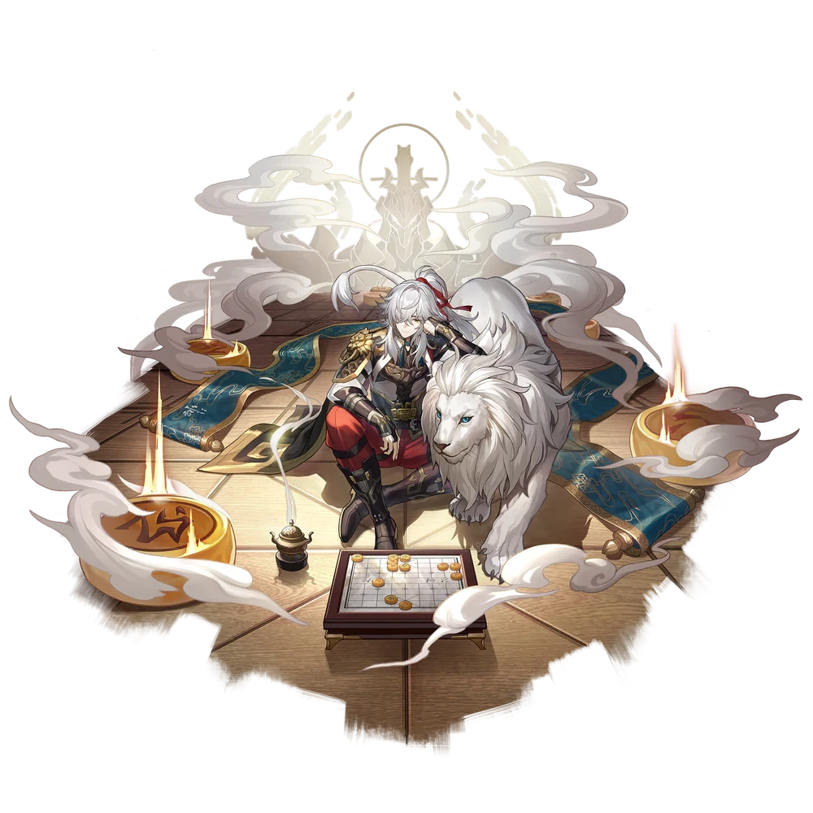

| Nome | Jing Yuan |
|---|---|
| Elemento | Trovão | Raridade | ✦ ✦ ✦ ✦ ✦ |
| Caminho | A Erudição |
| Sexo | Homem |
| Especie | Humano |
| Facção | O Xianzhou Luofu, Aliança de Xianzhou, Cavaleiros das Nuvens e seis cocheiros | Mundo | O Xianzhou Luofu | Como obter | Redemoinho da Lança Celestial | Data de Lançamento | 2023-05-17 | Adicionado pela primeira vez | Versão 0.7.0 |
Ascensões e estatísticas
| Fase de Ascensão | Level | Base HP | Base ATK | Base DEF | Base SPD |
|---|---|---|---|---|---|
| 0✦ | 1/20 | 158 | 95 | 66 | 99 |
| 20/20 | 308 | 185 | 128 | 99 | |
| 1✦ | 20/30 | 372 | 223 | 155 | 99 |
| 30/30 | 451 | 270 | 188 | 99 | |
| 2✦ | 30/40 | 514 | 308 | 214 | 99 |
| 40/40 | 594 | 356 | 247 | 99 | |
| 3✦ | 40/50 | 657 | 394 | 394 | 99 |
| 50/50 | 736 | 441 | 306 | 99 | |
| 4✦ | 50/60 | 799 | 479 | 333 | 99 |
| 60/60 | 879 | 527 | 366 | 99 | |
| 5✦ | 60/70 | 942 | 565 | 392 | 99 |
| 70/70 | 1,021 | 613 | 425 | 99 | |
| 6✦ | 70/80 | 1,085 | 651 | 452 | 99 |
| 80/80 | 1,164 | 698 | 485 | 99 |
| Nível | Custo de Evolução | Materiais de Ascensão do Personagem | Materiais Necessários |
|---|---|---|---|
| 0 → 1 ✦ |  4,000 4,000 |
 5 5 |
|
| 1 → 2 ✦ | 8,000 |
10 |
|
| 2 → 3 ✦ | 16,000 |
 3 3 |
 6 6 |
| 3 → 4 ✦ | 40,000 |
7 |
9 |
| 4 → 5 ✦ | 80,000 |
20 |
 6 6 |
| 5 → 6 ✦ | 160,000 |
35 |
9 |
Habilidades de combate
| Icone | Tipo | Nome | Descrição | Marcação | Energia | Resistência DMG |
|---|---|---|---|---|---|---|
 |
ATK básico | Luz Brilhante | Jing Yuan causa Lightning DMG igual a 50%–130% de seu ATK para um único inimigo. | Alvo único | Geração: 20 | 30 |
 |
Skill | Rifting Zenith | Causa Lightning DMG igual a 50%–125% do ATK de Jing Yuan para todos os inimigos e aumenta os Hits Per Action do Lightning-Lord em 2 para o próximo turno. | AoE | Geração: 30 | 30 |
 |
Ultimate | Portador da Luz | Causa Lightning DMG igual a 120%–240% do ATK de Jing Yuan a todos os inimigos e aumenta os Hits Per Action do Lightning-Lord em 3 para o próximo turno. | AoE | Custo: 130 Geração: 5 | 60 |
 |
Talento | Prana Extirpado | Invoca Lightning-Lord no início da batalha. Lightning-Lord tem 60 SPD base e 3 hits básicos por ação. Quando o Lightning-Lord entra em ação, seus acertos são considerados como ataques de acompanhamento , com cada acerto causando Lightning DMG igual a 33%–82,5% do ATK de Jing Yuan para um único inimigo aleatório, e os inimigos adjacentes a ele também recebem Lightning DMG igual a 25% do DMG causado ao inimigo alvo. Os Hits Per Action do Lightning-Lord podem atingir um máximo de 10. Cada vez que o Lightning-Lord's Hits Per Action aumenta em 1, seu SPD aumenta em 10. Depois que a ação do Lightning-Lord termina, seu SPD e Hits Per Action retornam à sua base valores. Quando Jing Yuan for derrubado , o Lightning-Lord desaparecerá. Quando Jing Yuan é afetado pelo debuff de controle de multidão , o Lightning-Lord é incapaz de agir. | Quicar | Geração: 0 | 15 (Principal, Por Acerto) 0 (Adjacente) |
 |
Técnica | Invocação do Espírito | Depois que a Técnica é usada, os Ataques por Ação do Senhor do Relâmpago no primeiro turno aumentam em 3 no início da próxima batalha. | Melhorar |
Eidolons
| Icone | Nome da habilidade | Nivel | Descrição |
|---|---|---|---|
 |
Corte, Divisão dos Mares | 1 | Quando o Lightning-Lord ataca, o multiplicador de DMG nos inimigos adjacentes ao inimigo alvo aumenta em uma quantidade extra igual a 25% do multiplicador de DMG contra o inimigo alvo. |
 |
Balanço, Céus Esmagados | 2 | Depois que Lightning-Lord entra em ação, o DMG causado pelo ATK Básico, Habilidade e Ultimate de Jing Yuan aumenta em 20% por 2 turno(s). |
 |
Strike, Sóis Subjugados | 3 | Nível final +2, até um máximo de Lv. 15. ATK Básico Lv. +1, até um máximo de Lv. 10. |
 |
Girar, Estrelas Cercadas | 4 | Para cada golpe executado pelo Lightning-Lord quando ele entra em ação, Jing Yuan regenera 2 de energia. |
 |
Stride, Espólios Apreendidos | 5 | Habilidade Nv. +2, até um máximo de Lv. 15. Talento Nv. +2, até um máximo de Lv. 15. |
 |
Varredura, Almas Mortas | 6 | Cada golpe realizado pelo Lightning-Lord quando ele entra em ação tornará o alvo inimigo Vulnerável. Enquanto vulnerável, os inimigos recebem 12% a mais de DMG até o final do turno atual do Lightning-Lord, acumulando até 3 vez(es). |
Traços
| Custo Total (1 → 6 para rastreamento de ATK básico) | ||||||
|---|---|---|---|---|---|---|
| 240.000 |
6 |
7 |
7 |
 3 3 |
 8 8 |
 11 11 |
| Custo total (1 → 10 para um rastreamento) | ||||||||
|---|---|---|---|---|---|---|---|---|
| 652.000 |
9 |
13 |
7 |
3 |
15 |
30 |
.webp) 3 3 |
 1 1 |